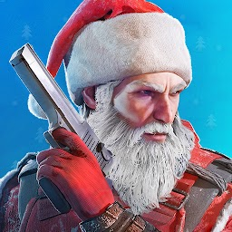

Обновление сегодня
Сегодня произошло обновление в нашей игре. Пасс наконец-то вышел на рынок. В связи с этим, магазин очень лагал и нельзя было купить почти ничего. Можно было купить только спустя некоторое время.

|  | Standoff 2 news |
Сегодня произошло обновление в нашей игре. Пасс наконец-то вышел на рынок. В связи с этим, магазин очень лагал и нельзя было купить почти ничего. Можно было купить только спустя некоторое время.

На данный момент есть несколько вариантов получить бесплатные скины в Стандофф 2 и многие профессионалы об этом знают, особенно те кто много играет в игру Стендофф 2. Например можно пойти на сайт по открытию кейсов и испытать удачу, открывая бесплатный кейс, но подобный метод гарантий не даёт и чаще всего оттуда вылетает самое дешёвое оружие, потому-что подобные проекты создаются только с целью наживы. Самый верный способ выбить бесплатный скин из бокса - это накопить игровой валюты, то есть серебра.

Играю целый год и не жалею что скачал. Большой выбор оружий. Кастомизация орудий велика до не возможности. И брелки и расскраски и наклейки и все что хочешь. Ранг зависит от твоего MMR. Механика урона зависит от этого:Попадение в части тела : Нога — маленький урон; Руки-тоже самое что и нога; Торс — Средний урон; Голова — Урон по которой проходит гигансткий.

Многие игроки реально задумываются, а возможно ли получить дорогой нож без доната в Стандофф 2 и какие самые
действенные метода имеются на данный момент. На самом деле вариантов немного, но всё же несколько вполне
рабочих имеется, так что давайте дальше рассмотрим, как получить дорогой скин бесплатно в Standoff 2.
Самый дорогостоящий - это Керамбит Голд и на него замахиваться бессмысленно, но если поиграть пару лет,
собирая боксы, то возможно получится накопить на него, продавая выпадающие скины из боксов, но надежда
честно говоря очень крохотная.
А вот ножи бабочки идут от 5000 тысяч голды и собрать золото на такой ножик гораздо проще, но тоже придётся
попотеть, прежде чем наберётся нужная сумма для покупки подобной вещицы.
Самое дешёвое холодное оружие в игре Стендофф 2 на данный момент "jKommando Ancient", так что собрать
необходимое число золотых монет на него проще, чем например на Karambit Gold.

В игре Standoff 2 присутствует несколько снайперских винтовок, а точное их число на данный момент три штуки
и сегодня рассмотрим самую мощную снайперскую винтовку Стандофф 2, которая убивает соперников с одного
выстрела, если попасть в тело или голову, а также наносит критический урон, если пуля угодит в руку или
ногу. Также как на ножи и прочее оружие - эти пушки имеют свои уникальные скины, а некоторые очень даже
дорогие. Тут собраны самые дорогие скины на AWM в Standoff 2 и насчитывается их всего лишь четыре штуки, а
самый дорогой естественно золотой хантер, как и керамбит голд он стоит много голды, что способен позволить
себе только зажиточный геймер.
1. Treasure Hunter
Этот скин выполнен из чистого золота, как Karambit Gold и входит в линейку аркан. На данный момент является
самым дорогим для винтовок данного типа и на торговой площадке в продаже всего пару штук.

Тоже достаточно изящно прорисован и как настоящий спортсмен достигает лучших показателей в стрельбе, если правильно обращаться. Цена вполне кусачая и по карману не всем.

Тоже не дешёвый скин и в stattrack вариации гораздо дороже, чем в обычной, потому что имеет специальный счётчик, подсчитывающий убийства.

На данный момент самый дорогой нож в игре это - керамбит голд.
Bыбить его не так легко. Он присутствует только в - GIFT BOX. Сейчас это оружие пользуется большой популярностью у игроков. На рынке его цена доходит до 90000 G.
На данный момент на рынке пристствует много различных стикеров. В игре за всю историю было 2 стикерпака. Данные стикерпаки очeнь популярны в социальной сети Вконтакте среди игроков. Вы можете найти их на рынке и сами стикеры присутствуют на рынке
На данный момент на рынке пристствует много различных брелков, но самым милым брелком считается "Grumpy Tiger". На рынке он появился с выходом пасса на рынок.